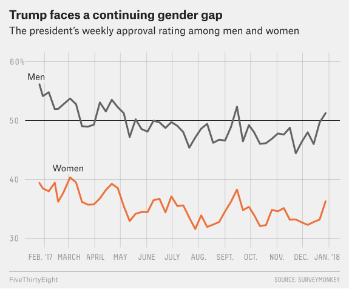
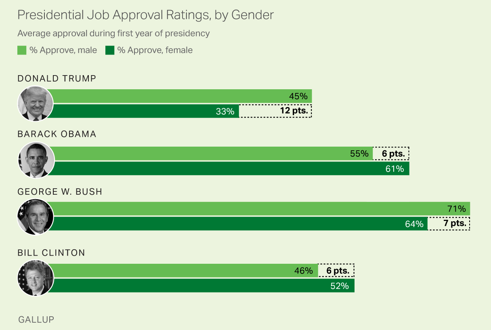

Inference for Categorical Data
MATH 4720/MSSC 5720 Introduction to Statistics
Inference for Categorical Data
Inference for a Single Proportion
Difference of Two Proportions
Test for Goodness of Fit
Test of Independence
Categorical Variable, Count and Proportion
One Categorical Variable with Two Categories
- A categorical variable Gender having 2 categories Male and Female.
| Subject | Gender |
|---|---|
| 1 | Male |
| 2 | Female |
| \(\vdots\) | \(\vdots\) |
| \(n\) | Female |
One-way frequency/count table
| \(X\) | Count |
|---|---|
| Male | \(y\) |
| Female | \(n-y\) |
The sample male proportion is \(y/n\).
Goal: estimate or test gender ratio or the male population proportion
Probability Distribution for Count Data: Two Levels
- The number of Male can be viewed as a random variable because the count \(y\) varies from sample to sample.
What probability distribution might be appropriate for the count \(Y\)?
. . .
-
\(binomial(n, \pi)\) could be a good option for the count data with 2 categories.
Fixed number of trials. (Fixed \(n\) subjects)
Each trial results in one of two outcomes. (Either \(M\) or \(F\))
Trials are independent. (If sample subjects randomly)
. . .
If the proportion of being in category \(M\) is \(\pi\), the count \(Y\) has \[P(Y = y \mid n, \pi) = \frac{n!}{y!(n-y)!}\pi^{y}(1-\pi)^{n-y}\]
Our job is to do inference about \(\pi\).
- or in general the count \((Y_M, Y_F)\) has the probability function \[P(Y_M = y, Y_F = n-y \mid n, \pi) = \frac{n!}{y!(n-y)!}\pi^{y}(1-\pi)^{n-y}\]
- One of our goals in categorical data analysis is to estimate or test population proportions of categories, here \(M\) and \(F\), or \((\pi, 1-\pi)\).
Inference for a Single Proportion
Inference About a Single Population Proportion
- Example: Exit Poll Suppose we collected data on 1,000 voters in an election with only two candidates: R and D.
| Voter | R | D |
|---|---|---|
| 1 | x | |
| 2 | x | |
| \(\vdots\) | \(\vdots\) | \(\vdots\) |
| 1000 | x |
- Based on the data, we want to predict who won the election.
Poll Example Cont’d
Let \(Y\) be the number of voters voted for R.
Assume \(Y \sim binomial(n = 1000, \pi)\).
\(\pi = P(\text{a voter voted for R}) =\) population proportion of all voters voted for R: A unknown parameter to be estimated or tested.
Predict whether or not R won the election.
| Voter | R | D |
|---|---|---|
| 1 | x | |
| 2 | x | |
| \(\vdots\) | \(\vdots\) | \(\vdots\) |
| 1000 | x |
| Candidate | Count | Proportion |
|---|---|---|
| R | \(y\) | \(\hat{\pi} = y/n\) |
| D | \(n-y\) | \(1-\hat{\pi} = 1- \frac{y}{n}\) |
What are \(H_0\) and \(H_1\)?
. . .
- \(\begin{align} &H_0: \pi \le 1/2 \\ &H_1: \pi > 1/2 \text{ (more than half voted for R)} \end{align}\)
Hypothesis Testing for \(\pi\)
-
Step 0: Assumptions
- \(n\pi_0 \ge 5\) and \(n(1-\pi_0) \ge 5\) (the larger, the better)
-
Step 1: Null and Alternative Hypothesis
- \(\begin{align} &H_0: \pi = \pi_0 \\ &H_1: \pi > \pi_0 \text{ or } \pi < \pi_0 \text{ or } \pi \ne \pi_0 \end{align}\)
-
Step 2: Set \(\alpha\)
-
Step 3: Test Statistic
- Under \(H_0\), \(z_{test} = \dfrac{\hat{\pi} - \pi_0}{\sqrt{\frac{\pi_0(1-\pi_0)}{n}}}\) where \(\hat{\pi} = \frac{y}{n} =\) sample proportion
. . .
The sampling distribution of \(\hat{\pi}\) is approximately normal with mean \(\pi\) and standard error \(\sqrt{\frac{\pi(1-\pi)}{n}}\) if \(y_i\) are independent and the assumptions are satisfied.
Hypothesis Testing for \(\pi\)
Step 4-c: Critical Value \(z_{\alpha}\) (one-tailed) or \(z_{\alpha/2}\) (two-tailed)
-
Step 5-c: Draw a Conclusion Using Critical Value Method
- \(H_1: \pi > \pi_0\): Reject \(H_0\) in favor of \(H_1\) if \(z > z_{\alpha}\)
- \(H_1: \pi < \pi_0\): Reject \(H_0\) in favor of \(H_1\) if \(z < -z_{\alpha}\)
- \(H_1: \pi \ne \pi_0\): Reject \(H_0\) in favor of \(H_1\) if \(|z| > z_{\alpha/2}\)
Step 6: Restate the Conclusion in Nontechnical Terms, and Address the Original Claim
Poll Example Cont’d (Hypothesis Testing)
In an exit poll of 1,000 voters, 520 voted for R, one of the two candidates.
Step 0: \(n\pi_0 = 1000(1/2) = 500 \ge 5\) and \(n(1-\pi_0) \ge 5\)
Step 1: \(\begin{align} &H_0: \pi \le 1/2 \\ &H_1: \pi > 1/2 \end{align}\)
Step 2: \(\alpha = 0.05\)
Step 3: \(z_{test} = \frac{\hat{\pi} - \pi_0}{\sqrt{\frac{\pi_0(1-\pi_0)}{n}}} = \frac{\frac{520}{1000} - 0.5}{\sqrt{\frac{0.5(1-0.5)}{1000}}} = 1.26\)
. . .
Step 4: \(z_{\alpha} = z_{0.05} = 1.645\)
Step 5: Reject \(H_0\) in favor of \(H_1\) if \(z_{test} > z_{\alpha}\). Since \(z_{test} < z_{\alpha}\), we do not reject \(H_0\).
Step 6: We do not have sufficient evidence to conclude that R won.
We make the same conclusion based on \(p\)-value.
\[ p\text{-value} = P(Z > 1.26) = 0.1 > 0.05\]
Is there a sufficient evidence to conclude at \(\alpha = 0.05\) that R won the election?
Confidence Interval for \(\pi\)
Assumptions: \(n\hat{\pi} \ge 5\) and \(n(1-\hat{\pi}) \ge 5\)
A \(100(1 - \alpha)\%\) confidence interval for \(\pi\) is \[\hat{\pi} \pm z_{\alpha/2}\sqrt{\frac{\pi(1-\pi)}{n}}\] where \(\hat{\pi} = y/n\).
. . .
- \(\pi\) is unknown and use the estimate \(\hat{\pi}\) instead: \[\hat{\pi} \pm z_{\alpha/2}\sqrt{\frac{\hat{\pi}(1-\hat{\pi})}{n}}\]
👉 No hypothesized value \(\pi_0\) in the confidence interval.
Poll Example Cont’d (Confidence Interval)
Assumption: \(n\hat{\pi} = 1000(0.52) = 520 \ge 5\) and \(n(1-\hat{\pi}) = 480 \ge 5\).
Estimate the proportion of all voters voted for R using 95% confidence interval:
\[\hat{\pi} \pm z_{\alpha/2}\sqrt{\frac{\hat{\pi}(1-\hat{\pi})}{n}} = 0.52 \pm z_{0.025}\sqrt{\frac{0.52(1-0.52)}{1000}} = (0.49, 0.55).\]
. . .
# Use alternative = "two.sided" to get CI
prop.test(x = 520, n = 1000, p = 0.5, alternative = "greater", correct = FALSE)
1-sample proportions test without continuity correction
data: 520 out of 1000, null probability 0.5
X-squared = 2, df = 1, p-value = 0.1
alternative hypothesis: true p is greater than 0.5
95 percent confidence interval:
0.494 1.000
sample estimates:
p
0.52 Difference of Two Proportions
Inference About Two Population Proportions
| Group 1 (M) | Group 2 (F) | |
|---|---|---|
| trials | \(n_1\) | \(n_2\) |
| number of successes | \(Y_1\) | \(Y_2\) |
| distribution | \(binomial(n_1, \pi_1)\) | \(binomial(n_2, \pi_2)\) |
- \(\pi_1\): Population proportion of success of Group 1
- \(\pi_2\): Population proportion of success of Group 2
| Voter | Gender | Approve |
|---|---|---|
| 1 | M | Yes |
| 2 | F | Yes |
| \(\vdots\) | \(\vdots\) | \(\vdots\) |
| 1000 | F | No |
- Is male’s president approval rate \(\pi_1\) higher than the female’s approval rate \(\pi_2\)?

- Comparing two population proportions \(\pi_1\) and \(\pi_2\).
Hypothesis Testing for \(\pi_1\) and \(\pi_2\)
-
Step 0: Assumptions
- \(n_1\hat{\pi}_1 \ge 5\), \(n_1(1-\hat{\pi}_1) \ge 5\) and \(n_2\hat{\pi}_2 \ge 5\), \(n_2(1-\hat{\pi}_2) \ge 5\)
-
Step 1: Null and Alternative Hypothesis
- \(\begin{align} &H_0: \pi_1 = \pi_2 \\ &H_1: \pi_1 > \pi_2 \text{ or } \pi_1 < \pi_2 \text{ or } \pi_1 \ne \pi_2 \end{align}\)
Step 2: Set \(\alpha\)
-
Step 3: Test Statistic
- \(z_{test} = \dfrac{\hat{\pi}_1 - \hat{\pi}_2}{\sqrt{\bar{\pi}(1-\bar{\pi})(\frac{1}{n_1} + \frac{1}{n_2}})}\), \(\bar{\pi} = \frac{y_1+y_2}{n_1+n_2}\) is the pooled sample proportion estimating \(\pi\)
\(z_{test} = \dfrac{\hat{\pi}_1 - \hat{\pi}_2}{\sqrt{\frac{\bar{\pi}(1-\bar{\pi})}{n_1} + \frac{\bar{\pi}(1-\bar{\pi})}{n_2}}} = \dfrac{\hat{\pi}_1 - \hat{\pi}_2}{\sqrt{\bar{\pi}(1-\bar{\pi})(\frac{1}{n_1} + \frac{1}{n_2}})}\), \(\bar{\pi} = \frac{y_1+y_2}{n_1+n_2}\) is the pooled sample proportion that is an estimate of \(\pi\)
Hypothesis Testing for \(\pi_1\) and \(\pi_2\)
Step 4-c: Find the Critical Value \(z_{\alpha}\) (one-tailed) or \(z_{\alpha/2}\) (two-tailed)
-
Step 5-c: Draw a Conclusion Using Critical Value Method
-
Reject \(H_0\) in favor of \(H_1\) if
- \(H_1: \pi_1 > \pi_2\): Reject \(H_0\) in favor of \(H_1\) if \(z > z_{\alpha}\)
- \(H_1: \pi_1 < \pi_2\): Reject \(H_0\) in favor of \(H_1\) if \(z < -z_{\alpha}\)
- \(H_1: \pi_1 \ne \pi_2\): Reject \(H_0\) in favor of \(H_1\) if \(|z| > z_{\alpha/2}\)
-
Reject \(H_0\) in favor of \(H_1\) if
Step 6: Restate the Conclusion in Nontechnical Terms, and Address the Original Claim
Example: Effectiveness of Learning
A study on 300 students to compare the effectiveness of learning Statistics via online and in-person classes.
- Randomly assign
- 125 students to the online program
- the remaining 175 to the in-person program.
| Exam Results | Online Instruction | In-Person Instruction |
|---|---|---|
| Pass | 94 | 113 |
| Fail | 31 | 62 |
| Total | 125 | 175 |
- Is there sufficient evidence to conclude that the online program is more effective than the traditional in-person program at \(\alpha=0.05\)?
Example: Effectiveness of Learning Cont’d (Testing)
- Step 1: \(H_0: \pi_1 = \pi_2\) vs. \(H_1: \pi_1 > \pi_2\)
\(\pi_1\) \((\pi_2)\) is the population proportion of students passing the exam under the online (in-person) program.
. . .
- Step 0: \(\hat{\pi}_1 = 94/125 = 0.75\) and \(\hat{\pi}_2 = 113/175 = 0.65\).
\(n_1\hat{\pi}_1 = 94 > 5\), \(n_1(1-\hat{\pi}_1) = 31 > 5\), and \(n_2\hat{\pi}_2 = 113 > 5\), \(n_2(1-\hat{\pi}_2) = 62 > 5\)
. . .
- Step 2: \(\alpha = 0.05\)
. . .
- Step 3: \(\bar{\pi} = \frac{94+113}{125+175} = 0.69\). \(z_{test} = \dfrac{\hat{\pi}_1 - \hat{\pi}_2}{\sqrt{\bar{\pi}(1-\bar{\pi})(\frac{1}{n_1} + \frac{1}{n_2}})} = \frac{0.75 - 0.65}{\sqrt{0.69(1-0.69)(\frac{1}{125} + \frac{1}{175})}} = 1.96\)
. . .
- Step 4: \(z_{\alpha} = z_{0.05} = 1.645\)
. . .
- Step 5: Reject \(H_0\) in favor of \(H_1\) if \(z_{test} > z_{\alpha}\). Since \(z_{test} > z_{\alpha}\), we reject \(H_0\).
. . .
- Step 6: We have sufficient evidence to conclude that the online program is more effective.
Confidence Interval for \(\pi_1 - \pi_2\)
- A \(100(1 - \alpha)\%\) confidence interval for \(\pi_1 - \pi_2\) is
\[\hat{\pi}_1 - \hat{\pi}_2 \pm z_{\alpha/2}\sqrt{\frac{\hat{\pi}_1(1-\hat{\pi}_1)}{n_1}+\frac{\hat{\pi}_2(1-\hat{\pi}_2)}{n_2}}\]
- Requirements: \(n_1\hat{\pi}_1 \ge 5\), \(n_1(1-\hat{\pi}_1) \ge 5\) and \(n_2\hat{\pi}_2 \ge 5\), \(n_2(1-\hat{\pi}_2) \ge 5\)
Example: Effectiveness of Learning Cont’d (CI)
Want to know how much effective is the online program.
Estimate \(\pi_1 - \pi_2\) using a \(95\%\) confidence interval:
\[\hat{\pi}_1 - \hat{\pi}_2 \pm z_{\alpha/2}\sqrt{\frac{\hat{\pi}_1(1-\hat{\pi}_1)}{n_1}+\frac{\hat{\pi}_2(1-\hat{\pi}_2)}{n_2}}\]
\(z_{0.05/2} = 1.96\)
The 95% confidence interval is
\[0.75 - 0.65 \pm 1.96\sqrt{\frac{(0.75)(1-0.75)}{125} + \frac{(0.65)(1-0.65)}{175}}\\ = (0.002, 0.210)\]
Implementation in R
2-sample test for equality of proportions without continuity correction
data: c(94, 113) out of c(125, 175)
X-squared = 4, df = 1, p-value = 0.02
alternative hypothesis: greater
95 percent confidence interval:
0.0193 1.0000
sample estimates:
prop 1 prop 2
0.752 0.646 Test for Goodness of Fit
Categorical Variable with More Than 2 Categories
- A categorical variable has \(k\) categories \(A_1, \dots, A_k\).
| Subject | Variable |
|---|---|
| 1 | \(A_2\) |
| 2 | \(A_4\) |
| 3 | \(A_1\) |
| 4 | \(A_3\) |
| 5 | \(A_k\) |
| \(\vdots\) | \(\vdots\) |
| \(n\) | \(A_3\) |
With the size \(n\), for categories \(A_1, \dots , A_k\), their observed count is \(O_1, \dots, O_k\), and \(\sum_{i=1}^kO_i = n\).
One-way count table:
| \(A_1\) | \(A_2\) | \(\cdots\) | \(A_k\) | Total |
|---|---|---|---|---|
| \(O_1\) | \(O_2\) | \(\cdots\) | \(O_k\) | \(n\) |
Example: More Than 2 Categories
Are the selected jurors are racially representative of the population?
- Idea: If the jury is representative of the population, the proportions in the sample should reflect the population of eligible jurors, i.e., registered voters.
| White | Black | Hispanic | Asian | Total | |
|---|---|---|---|---|---|
| Representation in juries | \(O_1 = 205\) | \(O_2 = 26\) | \(O_3 = 25\) | \(O_4 = 19\) | \(n = 275\) |
| Registered voters | \(\pi_1^0 = 0.72\) | \(\pi_2^0 = 0.07\) | \(\pi_3^0 = 0.12\) | \(\pi_4^0 = 0.09\) | \(1.00\) |
Example: More Than 2 Categories
| White | Black | Hispanic | Asian | Total | |
|---|---|---|---|---|---|
| Representation in juries | \(O_1 = 205\) | \(O_2 = 26\) | \(O_3 = 25\) | \(O_4 = 19\) | \(n = 275\) |
| Registered voters | \(\pi_1^0 = 0.72\) | \(\pi_2^0 = 0.07\) | \(\pi_3^0 = 0.12\) | \(\pi_4^0 = 0.09\) | \(1.00\) |
| White | Black | Hispanic | Asian | Total | |
|---|---|---|---|---|---|
| Representation in juries | \(O_1/n = 0.75\) | \(O_2/n = 0.09\) | \(O_3/n = 0.09\) | \(O_4/n = 0.07\) | \(1.00\) |
| Registered voters | \(\pi_1^0 = 0.72\) | \(\pi_2^0 = 0.07\) | \(\pi_3^0 = 0.12\) | \(\pi_4^0 = 0.09\) | \(1.00\) |
While the proportions in the juries do not precisely represent the population proportions, it is unclear whether these data provide convincing evidence that the sample is not representative. If the jurors really were randomly sampled from the registered voters, we might expect small differences due to chance. However, unusually large differences may provide convincing evidence that the juries were not representative.
Example: More Than 2 Categories
| White | Black | Hispanic | Asian | Total | |
|---|---|---|---|---|---|
| Representation in juries | \(O_1 = 205\) | \(O_2 = 26\) | \(O_3 = 25\) | \(O_4 = 19\) | \(n = 275\) |
| Registered voters | \(\pi_1^0 = 0.72\) | \(\pi_2^0 = 0.07\) | \(\pi_3^0 = 0.12\) | \(\pi_4^0 = 0.09\) | \(1.00\) |
If the individuals are randomly selected to serve on a jury, about how many of the 275 people would we expect to be white? How about Hispanic?
. . .
- About \(72\%\) of the population is white, so we would expect about \(72\%\) of the jurors to be white: \(0.72 \times 275 = 198\).
| White | Black | Hispanic | Asian | |
|---|---|---|---|---|
| Representation in juries | \(O_1 = 205\) | \(O_2 = 26\) | \(O_3 = 25\) | \(O_4 = 19\) |
| Hypothesized expected number | \(275 \times \pi_1^0 = 198\) | \(275 \times \pi_2^0 = 19.25\) | \(275 \times \pi_3^0 = 33\) | \(275 \times \pi_4^0 = 24.75\) |
Goodness-of-Fit Test
Are the proportions (counts) of juries close enough to the proportions (counts) of registered voters, so that we are confident saying that the jurors really were randomly sampled from the registered voters?
- A goodness-of-fit test tests the hypothesis that the observed frequency distribution fits or conforms to some claim distribution.
| White | Black | Hispanic | Asian | Total | |
|---|---|---|---|---|---|
| Observed Count | \(O_1 = 205\) | \(O_2 = 26\) | \(O_3 = 25\) | \(O_4 = 19\) | \(n = 275\) |
| Expected Count | \(E_1 = 198\) | \(E_2 = 19.25\) | \(E_3 = 33\) | \(E_4 = 24.75\) | \(n = 275\) |
| Proportion under \(H_0\) | \(\pi_1^0 = 0.72\) | \(\pi_2^0 = 0.07\) | \(\pi_3^0 = 0.12\) | \(\pi_4^0 = 0.09\) | \(1.00\) |
| White | Black | Hispanic | Asian | |
|---|---|---|---|---|
| Observed Count | 205 | 26 | 25 | 19 |
| Expected Count | 198 | 19.25 | 33 | 24.75 |
| Population Proportion | 0.72 | 0.07 | 0.12 | 0.09 |
- Given a sample of cases that can be classified into several (more than 2) groups, determine if the sample is representative of the general population.
- Evaluate whether data resemble a particular distribution.
- The sample proportion represented from each race among the 275 jurors was not a precise match for any ethnic group. While some sampling variation is expected, we would expect the sample proportions to be fairly similar to the population proportions if there is no bias on juries.
- We need to test whether the differences are strong enough to provide convincing evidence that the jurors are not a random sample.
Goodness-of-Fit Test
| White | Black | Hispanic | Asian | Total | |
|---|---|---|---|---|---|
| Observed Count | 205 | 26 | 25 | 19 | 275 |
| Expected Count | 198 | 19.25 | 33 | 24.75 | 275 |
| Population Proportion \((H_0)\) | 0.72 | 0.07 | 0.12 | 0.09 | 1.00 |
Observed Count and Expected Count are similar if no bias on juries.
Test whether the differences are strong enough to provide convincing evidence that the jurors are not a random sample of registered voters.
\(\begin{align} &H_0: \text{No racial bias in who serves on a jury, and } \\ &H_1: \text{There is racial bias in juror selection} \end{align}\)
. . .
\(\begin{align} &H_0: \pi_1 = \pi_1^0, \pi_2 = \pi_2^0, \dots, \pi_k = \pi_k^0\\ &H_1: \pi_i \ne \pi_i^0 \text{ for some } i \end{align}\)
While some sampling variation is expected, we would expect the sample proportions to be similar to the population proportions if there is no bias on juries.
We need to test whether the differences are strong enough to provide convincing evidence that the jurors are not a random sample of registered voters.
\(\quad\text{the observed counts reflect natural sampling fluctuation.}\)
Goodness-of-Fit Test Statistic
| White | Black | Hispanic | Asian | Total | |
|---|---|---|---|---|---|
| Observed Count | \(O_1 = 205\) | \(O_2 = 26\) | \(O_3 = 25\) | \(O_4 = 19\) | \(n = 275\) |
| Expected Count | \(E_1 = 198\) | \(E_2 = 19.25\) | \(E_3 = 33\) | \(E_4 = 24.75\) | \(n = 275\) |
| Proportion under \(H_0\) | \(\pi_1^0 = 0.72\) | \(\pi_2^0 = 0.07\) | \(\pi_3^0 = 0.12\) | \(\pi_4^0 = 0.09\) | \(1.00\) |
Under \(H_0\), \(\chi^2_{test} = \frac{(O_1 - E_1)^2}{E_1} + \frac{(O_2 - E_2)^2}{E_2} + \cdots + \frac{(O_k - E_k)^2}{E_k}\), \(E_i = n\pi_i^0, i = 1, \dots, k\)
Reject \(H_0\) if \(\chi^2_{test} > \chi^2_{\alpha, df}\), \(df = k-1\)
Require each \(E_i \ge 5\), \(i = 1, \dots, k\).
- \(\chi^2_{test}\) summarizes how strongly the observed counts tend to deviate from the expected counts or null counts.
- 4720: In the textbook, \(E_i \ge 1\) and no more than \(20\%\) of the \(E_i\)s are less than 5.
Goodness-of-Fit Test Example
| White | Black | Hispanic | Asian | Total | |
|---|---|---|---|---|---|
| Observed Count | \(O_1 = 205\) | \(O_2 = 26\) | \(O_3 = 25\) | \(O_4 = 19\) | \(n = 275\) |
| Expected Count | \(E_1 = 198\) | \(E_2 = 19.25\) | \(E_3 = 33\) | \(E_4 = 24.75\) | \(n = 275\) |
| Proportion under \(H_0\) | \(\pi_1^0 = 0.72\) | \(\pi_2^0 = 0.07\) | \(\pi_3^0 = 0.12\) | \(\pi_4^0 = 0.09\) | \(1.00\) |
Under \(H_0\), \(\chi^2_{test} = \frac{(205 - 198)^2}{198} + \frac{(26 - 19.25)^2}{19.25} + \frac{(25 - 33)^2}{33} + \frac{(19 - 24.75)^2}{24.75} = 5.89\)
\(\chi^2_{0.05, 3} = 7.81\).
Do not reject \(H_0\) in favor of \(H_1\).
The data do not provide convincing evidence of racial bias in the juror selection.
Goodness-of-Fit Test in R
obs <- c(205, 26, 25, 19)
pi_0 <- c(0.72, 0.07, 0.12, 0.09)
## Use chisq.test() function
chisq.test(x = obs, p = pi_0)
Chi-squared test for given probabilities
data: obs
X-squared = 6, df = 3, p-value = 0.1[1] 198.0 19.3 33.0 24.8X-squared
5.89 [1] 0.117Test of Independence
Test of Independence (Contingency Table)
- Have TWO categorical variables, and want to test whether or not the two variables are independent.
. . .
Does the “Opinion on President’s Job Performance” depends on “Gender”?
Job performance: approve, disapprove, no opinion
Gender: male, female
| Voter | Gender | Performance |
|---|---|---|
| 1 | M | approve |
| 2 | F | disapprove |
| \(\vdots\) | \(\vdots\) | \(\vdots\) |
| n | F | disapprove |
| Approve | Disapprove | No Opinion | |
|---|---|---|---|
| Male | 18 | 22 | 10 |
| Female | 23 | 20 | 12 |

When we consider a two-way table, we often would like to know, are these variables related in any way? That is, are they dependent (versus independent)?
Test of Independence: Expected Count
- Compute the expected count of each cell in the two-way table under the condition that the two variables were independent with each other.
| Approve | Disapprove | No Opinion | Total | |
|---|---|---|---|---|
| Male | 18 (19.52) | 22 (20) | 10 (10.48) | 50 |
| Female | 23 (21.48) | 20 (22) | 12 (11.52) | 55 |
| Total | 41 | 42 | 22 | 105 |
. . .
- The expected count for the \(i\)th row and \(j\)th column:
\[\text{Expected Count}_{\text{row i; col j}} = \frac{\text{(row i total}) \times (\text{col j total})}{\text{table total}}\]
- As test of goodness-of-fit, we want to compute the expected count of each cell in the two-way table under the condition that the two variables were independent with each other.
Test of Independence Procedure
Require every \(E_{ij} \ge 5\) in the contingency table.
\(\begin{align} &H_0: \text{Two variables are independent }\\ &H_1: \text{The two are dependent (associated) } \end{align}\)
\(\chi^2_{test} = \sum_{i=1}^r\sum_{j=1}^c\frac{(O_{ij} - E_{ij})^2}{E_{ij}}\), where \(r\) is the number of rows and \(c\) is the number of columns in the table.
Reject \(H_0\) if \(\chi^2_{test} > \chi^2_{\alpha, \, df}\), \(df = (r-1)(c-1)\).
In the 4720 textbook, every \(E_{ij} \ge 1\) and no more than \(20\%\) of the \(E_{ij}\)s less than 5.
Test of Independence Example
| Approve | Disapprove | No Opinion | Total | |
|---|---|---|---|---|
| Male | 18 (19.52) | 22 (20) | 10 (10.48) | 50 |
| Female | 23 (21.48) | 20 (22) | 12 (11.52) | 55 |
| Total | 41 | 42 | 22 | 105 |
\(\begin{align} &H_0: \text{ Opinion does not depend on gender } \\ &H_1: \text{ Opinion and gender are dependent } \end{align}\)
\(\small \chi^2_{test} = \frac{(18 - 19.52)^2}{19.52} + \frac{(22 - 20)^2}{20} + \frac{(10 - 10.48)^2}{10.48} + \frac{(23 - 21.48)^2}{21.48} + \frac{(20 - 22)^2}{22} + \frac{(12 - 11.52)^2}{11.52}= 0.65\)
\(\chi^2_{\alpha, df} =\chi^2_{0.05, (2-1)(3-1)} = 5.991\).
Since \(\chi_{test}^2 < \chi^2_{\alpha, df}\), we do not reject \(H_0\).
We do not conclude that the Opinion on President’s Job Performance depends on Gender.
Test of Independence in R
[,1] [,2] [,3]
[1,] 18 22 10
[2,] 23 20 12## Using chisq.test() function
(indept_test <- chisq.test(contingency_table))
Pearson's Chi-squared test
data: contingency_table
X-squared = 0.7, df = 2, p-value = 0.7qchisq(0.05, df = (2 - 1) * (3 - 1), lower.tail = FALSE) ## critical value[1] 5.99AI Education Research
Help Marquette to offer AI-related courses, and better teaching using AI!